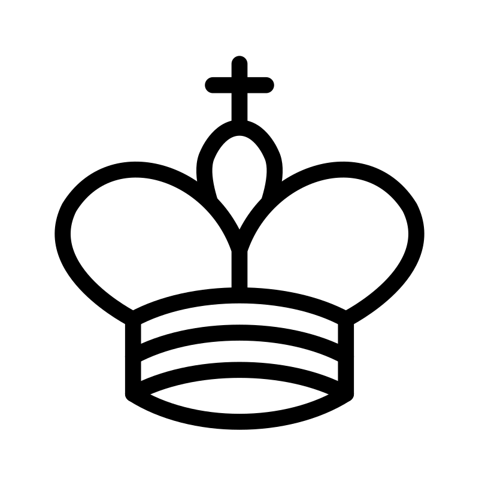
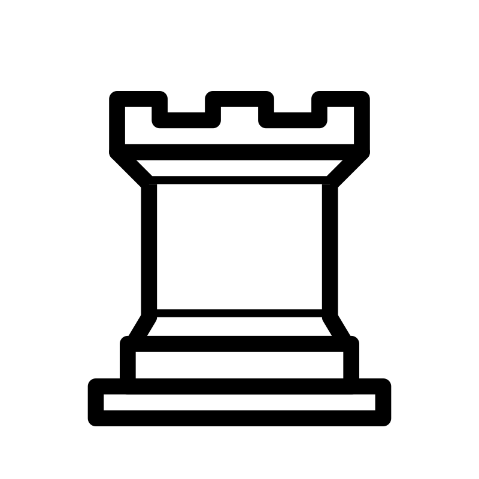

Тут правила игры в шахматы, как ходят фигуры, пад шах и т.д., не забудь убрать
Основная цель игры
- Поставить мат королю противника.
- Игра также может закончиться ничьей, если:
- На доске пат (король не под шахом, но ходов нет).
- Игроки соглашаются на ничью.
- Повторение позиции три раза.
- На доске недостаточно фигур для мата (например, король против короля).
- Правило 50 ходов:
- Если в течение 50 ходов:
- Ни одна фигура не была взята.
- Ни одна пешка не сделала ход.
- Игрок может заявить ничью.
Шахматная доска
- Доска состоит из 64 клеток (8x8), которые чередуются по цвету (обычно чёрные и белые).
- Каждый игрок начинает игру с 16 фигурами:
- 1 король
- 1 ферзь
- 2 ладьи
- 2 слона
- 2 коня
- 8 пешек
Как ходят фигуры

- Король
- Ход: на одну клетку в любом направлении (вперёд, назад, вбок, по диагонали).
- Особенность: король не может ходить под шах (на клетку, где он будет атакован).

- Ферзь
- Ход: на любое количество клеток по вертикали, горизонтали или диагонали.
- Особенность: самая мощная фигура на доске.

- Ладья
- Ход: на любое количество клеток по вертикали или горизонтали.
- Особенность: участвует в рокировке.
- Слон
- Ход: на любое количество клеток по диагонали.
- Особенность: каждый слон остаётся на клетках одного цвета (Слон который был на чёрной клетке не может перескочить на белую).
- Конь
- Ход: ходит буквой "Г" (две клетки в одном направлении и одна в перпендикулярном).
- Особенность: может "перепрыгивать" через другие фигуры.
- Пешка
- Ход: на одну клетку вперёд. В начале игры может пойти на две клетки вперёд.
- Взятие: пешка бьёт фигуры по диагонали на одну клетку вперёд.
- Особенность: если пешка доходит до последней горизонтали, она превращается в любую фигуру (кроме короля).
Специальные правила
- Рокировка
- Это ход, при котором король и ладья меняются местами. Условия:
- Король и ладья не делали ходов.
- Между королём и ладьёй нет других фигур.
- Король не находится под шахом и не проходит через атакованные клетки.
- Взятие на проходе
- Если пешка противника делает ход на две клетки вперёд и проходит мимо твоей пешки, ты можешь взять её, как если бы она пошла на одну клетку.
- Превращение пешки
- Если пешка доходит до последней горизонтали,
она может превратиться в любую фигуру (ферзя, ладью,
слона или коня).
Обычно выбирают ферзя, так как он самый сильный.